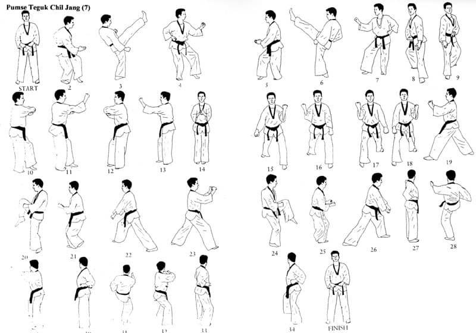

TaeKwonDo Form 7

The WTF TaeKwonDo Form 7 or Poomsae Tageuk Chil Jang applies the Gan principle of Palgwe. Gan means “top stop”, and symbolizes a mountain. It is male, taciturn and steady.
Like a mountain, it is totally stable and cannot be moved. One should not act hastily – the principle expressed by Gan. We must know when to forge ahead, but also when to stop and rest in order to achieve our goals.
Representing the mountain, this form teaches the student to move only when it is necessary to move – and then to move rapidly, and to stop suddenly and solidly, standing like a rock. It teaches commitment to motion and to immobility, for one must not waver.
This concept can be applied to sparring, to eliminate superfluous motion that waste energy. This poomsae is the first of the Taegeuks to be performed in a Cat Stance, which can easily be held still, but out of which one can also move quickly.
If you want more explanation, press it!
Tae Kwon Do Form 7 – Taegeuk Chil Jang – Step By Step
Step 1: From your Joon Bi Seogi, get into Beom Seogi or Tiger Stance; this means putting one leg in front of the other and bending both of them and slightly lifting the front leg to make it easier for you to use it faster. While you get into your Tiger Stance with your left foot in front, execute a right Hansonnal Momton Maki.
Step 2: Perform a Right Front Kick and go back to your Left Tiger Stance followed by a left middle block.
Step 3: Turn 180 degrees to your right on your left foot, assume Right Tiger Stance, and execute a right Hansonnal Momton Maki.
Step 4: Perform a left front kick and go back to your Right Tiger Stance followed by a right middle block.
Step 5: Turn 90 degrees to your left by moving your left foot to face the front in a Front Stance and execute a left Sonnal Are Neryo Maki; which basically is swinging your arm to a low block but leaving your hands open with palms facing the ground instead of closed in a fist.
Step 6: Step forward once with your right foot and assume Dwitgubi from there. At the same time, execute Sonnal Are Neryo Maki with your right hand.
Step 7: Turn 90 degrees to your left and get in your Tiger Stance, execute a right Batagson Montong Maki, followed by a right Reverse Backfist. Batagson Montong Maki is a middle block with your hands flat and open with your palm facing inward while a Reverse Backfist is an attack from your Batagson Momtong Maki pulling your arm in and quickly forcing it to hit your opponent’s face.
Step 8: Turn 180 degrees to your left and land in your Tiger Stance, execute a left Batagson Momtong Maki, followed by a left Reverse Backfist. Step 9: Turn 90 degrees to your right, place your feet next to each other, and close the distance between your them. At the same time, get your hands to close around each other in front of your stomach, with your right fist inside your left hand, raise it to your chest, and move it away from you.
Step 10: Step forward once with your left foot to get in front stance and execute Double Scissor Block and continue with Reversed Double Scissor Block
Step 11: Turn 270 degrees to your right on your left foot and get into Left Front Stance and do a Double Outside Block; this is when you lift both arms to an outside block at the same time.
Step 12: Grab your opponent’s head with both hands and bring it down with force as you raise your right knee to collide with it. Hop into your Wen Apkkoa Seogi and deliver a Double Uppercut aimed at the ribs. After this, get into Right Front Stance and execute a Double-Crossed Low Block.
Step 13: Turn 180 degrees to your left and get into Right Front Stance and do a Double Outside Block.
Step 14: Grab your opponent’s head with both hands and bring it down with force as you raise your left knee to collide with it. Hop into your Oreun Apkkoa Seogi and deliver a Double Uppercut aimed at the ribs. After this, get into Left Front Stance and execute a Double-Crossed Low Block.
Step 15: Turn 90 degrees to your left on your right foot, land your left foot in front of the right and execute a left Backfist.
Step 16: Deliver a right Pyojeok Chagi with your left hand open as a secondary target of your kick, land in a Right Horse Stance with your right foot in front and both knees bent 45 degrees. After this, strike your right elbow into your open left palm.
Step 17: Step your right foot in front of your left and execute a right Backfist.
Step 18: Deliver a left Pyojeok Chagi with your right hand open as a secondary target of your kick, land in a Left Horse Stance. After this, strike your right elbow into your open right palm.
Step 19: Execute a left Sonnal Monton Maki.
Step 20: Move into Right Horse Stance, deliver a right middle punch, yell, and turn around back into your Joon Bi Seogi.
Step 1: From your Joon Bi Seogi, get into Beom Seogi or Tiger Stance; this means putting one leg in front of the other and bending both of them and slightly lifting the front leg to make it easier for you to use it faster. While you get into your Tiger Stance with your left foot in front, execute a right Hansonnal Momton Maki.
Step 2: Perform a Right Front Kick and go back to your Left Tiger Stance followed by a left middle block.
Step 3: Turn 180 degrees to your right on your left foot, assume Right Tiger Stance, and execute a right Hansonnal Momton Maki.
Step 4: Perform a left front kick and go back to your Right Tiger Stance followed by a right middle block.
Step 5: Turn 90 degrees to your left by moving your left foot to face the front in a Front Stance and execute a left Sonnal Are Neryo Maki; which basically is swinging your arm to a low block but leaving your hands open with palms facing the ground instead of closed in a fist.
Step 6: Step forward once with your right foot and assume Dwitgubi from there. At the same time, execute Sonnal Are Neryo Maki with your right hand.
Step 7: Turn 90 degrees to your left and get in your Tiger Stance, execute a right Batagson Montong Maki, followed by a right Reverse Backfist. Batagson Montong Maki is a middle block with your hands flat and open with your palm facing inward while a Reverse Backfist is an attack from your Batagson Momtong Maki pulling your arm in and quickly forcing it to hit your opponent’s face.
Step 8: Turn 180 degrees to your left and land in your Tiger Stance, execute a left Batagson Momtong Maki, followed by a left Reverse Backfist. Step 9: Turn 90 degrees to your right, place your feet next to each other, and close the distance between your them. At the same time, get your hands to close around each other in front of your stomach, with your right fist inside your left hand, raise it to your chest, and move it away from you.
Step 10: Step forward once with your left foot to get in front stance and execute Double Scissor Block and continue with Reversed Double Scissor Block
Step 11: Turn 270 degrees to your right on your left foot and get into Left Front Stance and do a Double Outside Block; this is when you lift both arms to an outside block at the same time.
Step 12: Grab your opponent’s head with both hands and bring it down with force as you raise your right knee to collide with it. Hop into your Wen Apkkoa Seogi and deliver a Double Uppercut aimed at the ribs. After this, get into Right Front Stance and execute a Double-Crossed Low Block.
Step 13: Turn 180 degrees to your left and get into Right Front Stance and do a Double Outside Block.
Step 14: Grab your opponent’s head with both hands and bring it down with force as you raise your left knee to collide with it. Hop into your Oreun Apkkoa Seogi and deliver a Double Uppercut aimed at the ribs. After this, get into Left Front Stance and execute a Double-Crossed Low Block.
Step 15: Turn 90 degrees to your left on your right foot, land your left foot in front of the right and execute a left Backfist.
Step 16: Deliver a right Pyojeok Chagi with your left hand open as a secondary target of your kick, land in a Right Horse Stance with your right foot in front and both knees bent 45 degrees. After this, strike your right elbow into your open left palm.
Step 17: Step your right foot in front of your left and execute a right Backfist.
Step 18: Deliver a left Pyojeok Chagi with your right hand open as a secondary target of your kick, land in a Left Horse Stance. After this, strike your right elbow into your open right palm.
Step 19: Execute a left Sonnal Monton Maki.
Step 20: Move into Right Horse Stance, deliver a right middle punch, yell, and turn around back into your Joon Bi Seogi.